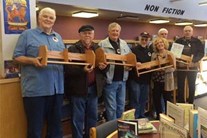
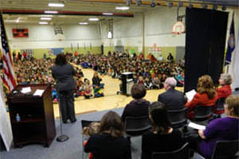

Trinity Presbyterian Church
HES and Trinity Presbyterian Church have been our partners since February 2012 but have been great neighbors for a long time. In the four years with us they have supported both our students and staff!
TPC members have served as mentors and tutors for our students, donated teacher supplies, and collected clothing/shoes for children in need. They have allowed us to use their building for staff development and their parking lot as overflow parking. Members have donated time by building book boxes for our primary classes and book shelves for the library, saving the school money. Other members have also donated to help purchase materials for stringed instruments.
The church has also provided school tutoring and assisted children that don’t have lunch-money. These are just a few of the ways that they have helped and supported us. We appreciate our partnership with Trinity as they truly represent community involvement!

